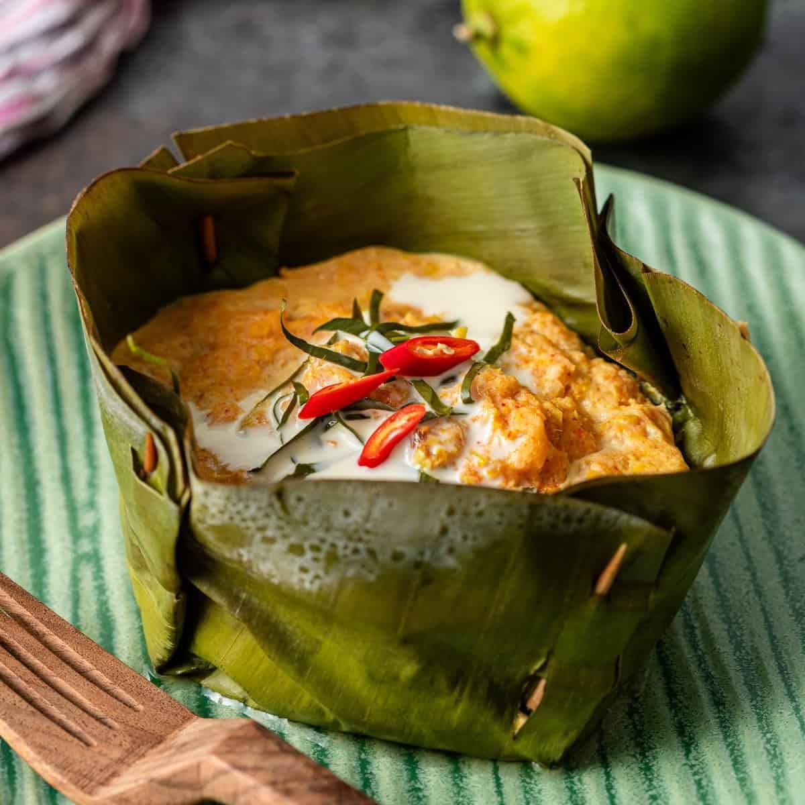
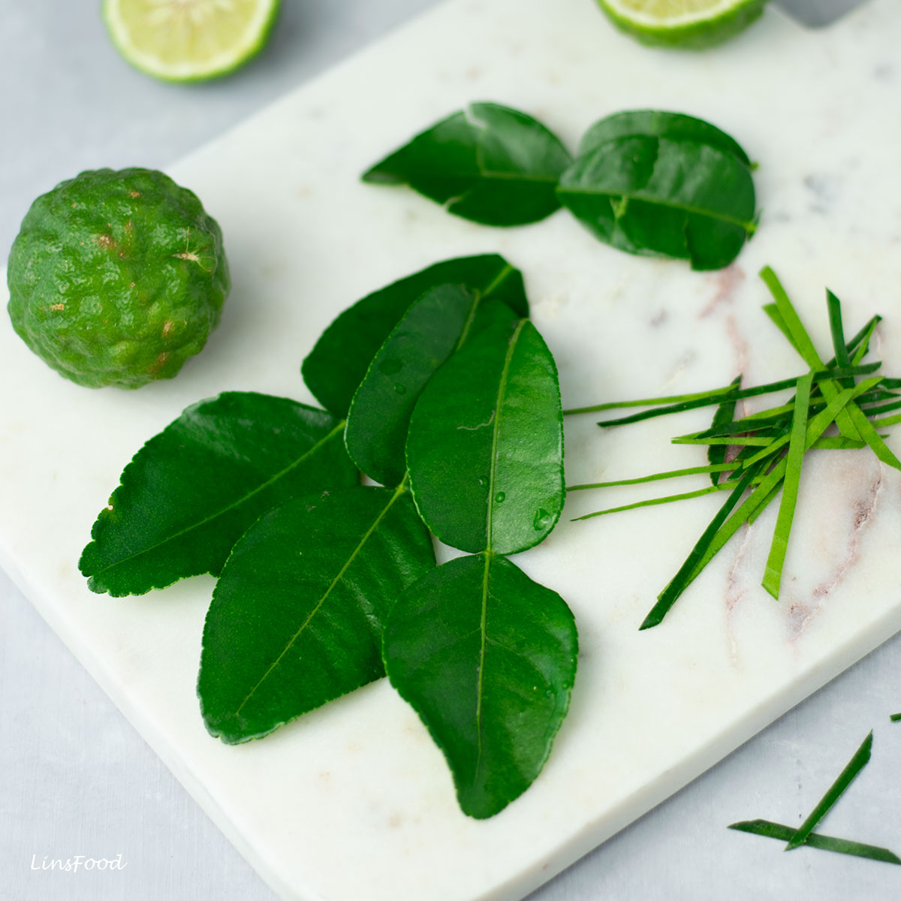
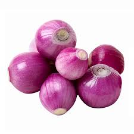
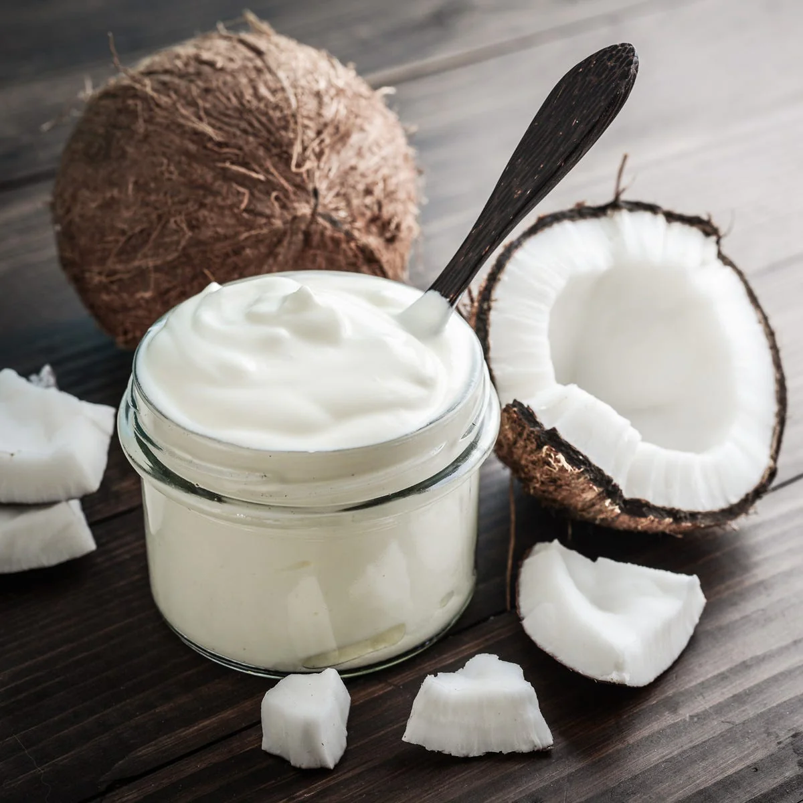

Fish Amok
អាម៉ុកត្រី
Amok is a traditional Khmer dish made with fish, coconut milk, and a rich, fragrant curry paste called kroeung. It's gently steamed in banana leaves, giving it a soft, custard-like texture and a slightly sweet, aromatic flavor.
Calories
1362 kcal (340 kcal per serving)

Snake Head Fish

1 fish
Buy NowCoconut Milk

400ml
Buy NowEggs

2
Buy NowLemon Grass

2 Stalks
Buy NowKaffir lime leaves

4 Leaves
Buy NowGalangal

1 inch piece
Buy NowTurmeric

1 tsp, fresh or powde
Buy NowGarlic

3 cloves
Buy NowShallots

2 medium
Buy NowBanana Leaves

For steaming
Buy NowNoni Leaves / Spinach
Optional, for lining
Buy NowRed Chili

Optional, for garnish
Buy NowCoconut Cream

For topping
Buy Now-
Step1: Prepare the fish
- Cut the fish into bite-sized pieces
- Clean and pat dry
- Set aside
-
Step 2: Make the kroeung (curry paste)
- Blend or pound lemongrass, kaffir lime leaves, galangal, turmeric, garlic, and shallots
- Process until it becomes a smooth paste
-
Step 3: Mix the curry base
- Combine kroeung paste, coconut milk, and eggs
- Add fish sauce and sugar
- Mix until smooth
-
Step 4: Add the fish
- Gently mix the fish into the curry
- Make sure all pieces are evenly coated
-
Step 5: Prepare banana leaf cups
- Fold banana leaves into small bowls
- Line with noni leaves or spinach (optional)
-
Step 6: Fill and steam
- Pour the mixture into the cups
- Steam for 20 to 30 minutes
- Cook until the texture is soft and set
-
Step 7: Garnish and serve
- Top with coconut cream
- Add sliced kaffir lime leaves and chili (optional)
- Serve hot with rice